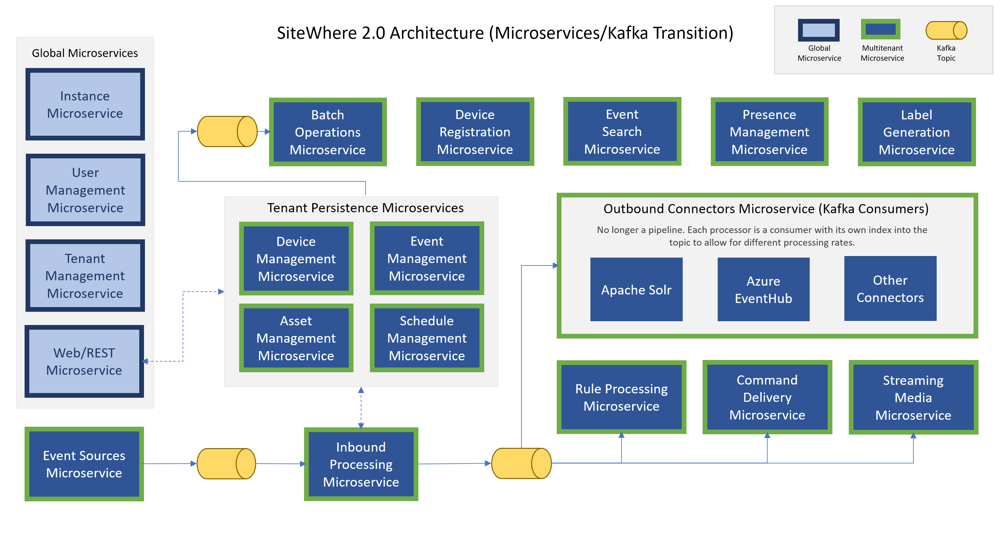

Microservices Overview¶
The transition from a monilithic architecture to one based on microservices is a key feature of the SiteWhere 2.0 architecture. Each microservice handles a specific subset of functionality that is clearly defined and delineated from the work done by other microservices. This allows parts of the system to be scaled independently while allowing some pieces to be left out completely if not used. The microservices approach also decouples the code so that it is easier to understand and manage from a development perspective. The diagram below shows the microservices and the general flow of data between them:
Infrastructure Components¶
SiteWhere microservices make a few assumptions about the underlying infrastructure that they are running on. At a minimum, instances of Apache ZooKeeper and Apache Kafka must be available in order for the system to function properly. By default, SiteWhere also produces distributed tracing data via the open tracing standard for runtime performance analysis. A server backend that supports the API may be configured to store and analyze the data.
Infrastructure Recipes¶
When launching from Docker Compose or Swarm, there are recipes available that may be used to provide the expected infrastructure components. The recipes include the required components such as ZooKeeper and Kafka as well as other supporting components such as Jaeger for tracing support and ZooNavigator for introspecting the ZooKeeper store.
Production Deployments¶
In a production scenario, ZooKeeper and Kafka should be configured outside of Docker and properly scaled to account for fault tolerance and availability. The SiteWhere team will offer more details about best practices as we approach the 2.0 GA release.
Microservice Deployment Model¶
Each microservice is packaged as a Spring Boot application and deployed as an independent Docker image. Since each microservice runs in a separate Docker container, each accounts for a separate Java process as opposed to all services running within the same process in 1.x.
System Resource Usage¶
SiteWhere 2.0 currently uses around 20 microservices, so the underlying hardware should be able to support running 20 concurrent Java processes, each with a footprint of around 750MB. As such, the hardware requirements for 2.0 are higher than 1.x, though most modern desktop computers can easily run a complete system. The intent for SiteWhere 2.0 is to make use of orchestration engines such as Docker Swarm to distribute the microservices across a cluster of machines, which lowers the hardware requirements for a single node. In the end, though SiteWhere 2.0 has a larger footprint, the architecture supports much more scalable systems that can leverage large clusters of hardware and scale dynamically.
Inter-Microservice Connectivity¶
Microservices do not operate in a vacuum and, as such, a high-performance RPC mechanism is needed to allow the services to communicate. SiteWhere leverages gRPC for moving data between microservices and offering performant binary APIs to external consumers. All API calls and data entities have been made available to gRPC via the Google Protocol Buffers data format. Using gRPC rather than REST for communication can increase API performance by more than 10x.
API Demultiplexors¶
Connections between microservices are not always one-to-one. For instance, if a SiteWhere instance has a single Web/REST microservice and three instances of the Device Management microservice, the REST microservice should be able to demultiplex calls across all three Device Management instances for scalability and fault tolerance. SiteWhere 2.0 introduces the concept of an API demulitplexor which is able to introspect the current instance topology and add/remove connections to other microservices dynamically. As the number of services is scaled up/down SiteWhere automatically connects/disconnects the piping between them. All inter-microservice communication happens via this mechanism.
Replicated Cache Support¶
Even with the high performance of gRPC, requesting commonly used data repeatedly across the network connection has a significant cost. Master information for entites such as devices, assignments, and assets is rarely updated and may be cached within the microservice rather than incurring the cost of a remote request. SiteWhere 2.0 uses a Hazelcast in-memory grid to provide a replicated cache of a subset of master data. This cache is queried before falling back to a network request.